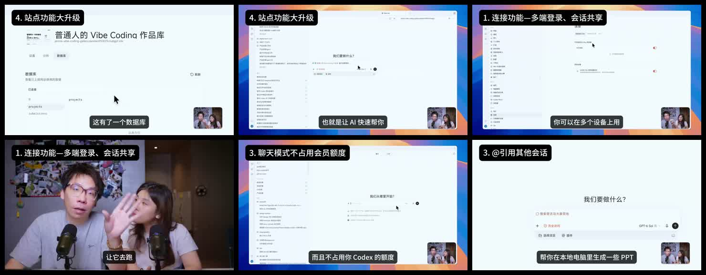

影片筆記｜ChatGPT／Codex 工作空間、站點與跨裝置協作：功能觀察與實務邊界

一句話摘要
這組影片描繪的方向很清楚：AI 產品不再只回答問題或寫程式，而是試圖把檔案、圖像、網站、資料庫、地圖與跨設備任務串成一個工作空間。不過，影片中的入口名稱、額度描述與功能可用性都可能因版本、地區、方案及帳號而不同，不能直接當成所有使用者都已可用的規格。
來源脈絡與證據邊界
本條目根據 2026-09-28 於 LINE 收到的兩段影片整理；合計約 7 分 45 秒。影片未附原作者、平台連結或官方公告，因此：
- 下列「影片展示」是講者的操作畫面與說法，不等同官方承諾。
- 畫面中的 ChatGPT、Codex、聊天／工作模式命名可能隨產品更新調整。
- 尤其是方案額度、跨設備控制、發布能力、資料庫與自訂網域等功能，採用前應以自己帳號內的介面、權限提示與官方文件為準。
影片展示的功能脈絡
1. 圖像與草圖導向生成
第一段指出介面加入圖像入口，並示範先手繪一朵花、封面版面或標示標題位置，再讓模型生成圖像。這種做法的實務價值不只是「畫得像」，而是把版面階層、主視覺位置與文字區域先講清楚，降低純文字提示詞反覆來回的成本。
導入建議：把草圖視為需求規格，而非最終美術稿；交付前仍要檢查文字、品牌元素、著作權素材與可讀性。
2. 雲端資料庫／檔案結構
影片展示可建立資料夾、子資料夾與文件，集中保存 AI 生成的內容與圖片；也提到從該資料庫延伸對話時，可能會回到一般聊天介面，而不是所有工作模式都能直接操作。
這反映一個重要設計問題：資料存放位置、可被哪個模式讀取、能否由本機工具存取，是三件不同的事。建立工作流前，宜先確認資料的匯出、分享、權限、刪除與備份機制。
3. 地圖與生活情境
影片展示以旅遊需求觸發地圖、景點、路線與收藏功能，並把收藏內容連到前述資料庫。這類功能適合做行程發想與資訊彙整，但路線、營業時間、交通與地點資料屬高度變動資訊，出發或付款前仍應查核原始來源。
4. 站點能力：從前端原型到含資料層的網站
第二段展示「站點功能」可建立作品庫、資料表或資料庫，並由 AI 協助編輯與調整網站；講者將它描述為從小型前端頁面走向可收集／保存資料、設定網域與檢視使用狀況的完整網站工作流。
實務上，這類能力是否真的適合正式服務，取決於至少五項條件：
- 資料儲存位置與備份策略。
- 身分驗證、權限與敏感資料保護。
- 自訂網域、部署、日誌與可觀測性。
- 匯出與遷移能力，避免被單一平台綁定。
- 上線前的人為驗收：表單、錯誤處理、隱私告知與資安測試。
5. 多設備與會話連接
影片提到同帳號可在多台設備使用，並把一台常開的桌機作為執行端、筆電作為下達任務與查看進度的介面。這是很有價值的工作模式：把長時間任務與個人正在使用的裝置解耦。
但「能看到會話」不必然等於「可完整遠端控制設備」。要另外確認執行端是否需持續登入、是否會要求權限確認、可存取哪些檔案／工具，以及中斷或關機後如何復原。
6. 聊天、規劃與本地工作要分層
影片將一般聊天／規劃、本地工作模式與 Codex 做分工：先在聊天階段討論大型方案，再把已確認的規格帶到工作模式，在本地資料夾中產生或編輯文件、簡報、HTML 等成果。
這個分層可直接轉成可靠的工作習慣：
- 聊天階段：釐清目標、限制、受眾與驗收標準。
- 規格階段：把決策整理為可交付的清單、檔案範圍與測試條件。
- 執行階段：只授予完成任務所需的最小檔案與工具權限。
- 驗收階段：檢查差異、測試、來源與可回復性，再決定是否發布。
7. 引用既有會話與分區整理
影片也展示可引用另一段會話的內容，以及把大量專案／會話分區分類。前者能減少重複說明背景，後者可把開發、課程、內容與產品探索分開管理。
要注意的是，跨會話引用雖便利，也可能把不該帶入的新任務的舊脈絡、個資或錯誤假設一併帶入。建議每次引用前說明「可帶入的範圍」，並在新任務中重新寫出不可變更的限制與資料邊界。
為什麼值得收進 AI 學習雷達
這兩段影片最值得保留的不是單一功能名稱，而是「AI 工作空間化」的趨勢：內容生產、程式開發、資料組織、網站上線和日常規劃正被整合到同一個入口。對教學與團隊導入而言，可用它討論三個核心問題：
- 什麼應交給 AI 自動化，什麼仍要人類審核？
- 雲端便利性與資料可攜性、隱私、平台依賴如何取捨？
- 如何把聊天中的想法，轉成可測試、可維護、可交付的實作？
實務檢核表
- 先用非敏感的測試資料確認功能，再導入真實工作內容。
- 涉及本機檔案、網站部署或帳號設定時，先閱讀權限範圍並保留變更紀錄。
- 對 AI 產生的網站、資料庫與地圖資訊進行人為測試與事實查核。
- 將規劃、執行、審核、發布拆開，避免把「可生成」誤當成「可上線」。
- 將關鍵文件與資料維持可匯出、可備份的副本。
原始來源
LINE 群組上傳影片（未附原始公開連結）。本文保存的是影片內容摘要與關鍵畫面；如取得原作者或官方公告連結，應補入本條目並進一步更新查核結果。